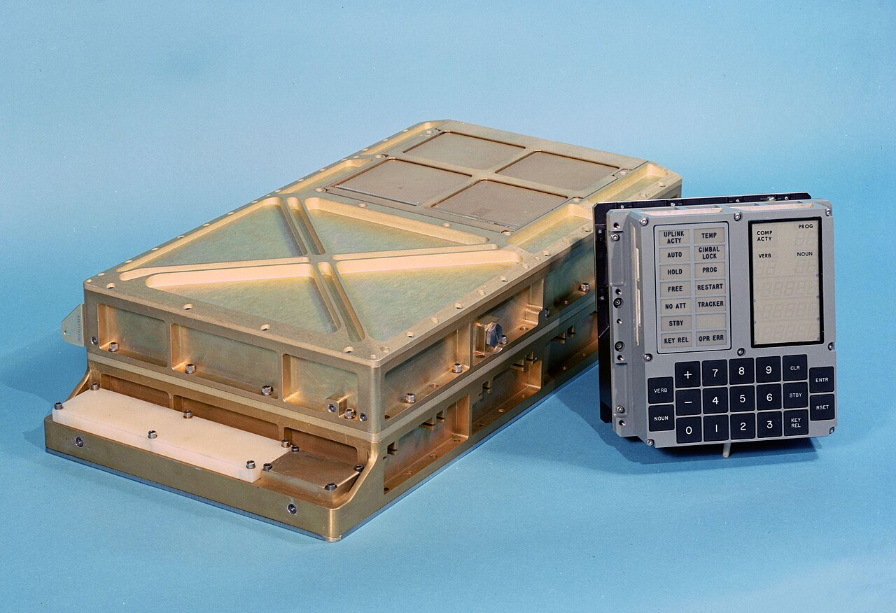
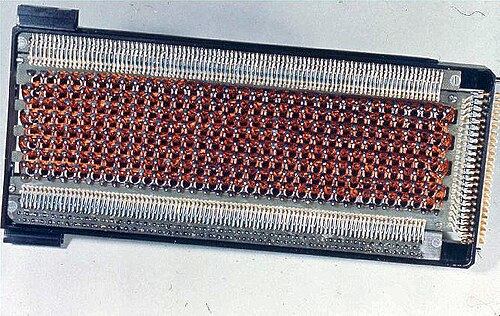

When President John F. Kennedy addressed a joint session of Congress on May 25, 1961, proposing that the United States "should commit itself to achieving the goal, before this decade is out, of landing a man on the moon and returning him safely to the earth," the technological infrastructure required for such a feat did not yet exist. The sheer audacity of the Apollo program lay not merely in building rockets powerful enough to escape Earth's gravity, but in the exquisite precision required to navigate a spacecraft across a quarter of a million miles of cislunar space, insert it into lunar orbit, descend to an alien surface, and then return home. This was a problem of celestial mechanics that demanded continuous, real-time calculation—a task far beyond the capability of human pilots armed with slide rules and sextants.
In the early 1960s, computers were behemoths. They occupied entire rooms, required massive air-conditioning units to keep their vacuum tubes from melting down, and consumed vast amounts of electricity. The idea of taking a machine with the computational power of a room-sized mainframe and shrinking it to fit inside a spacecraft—where every ounce of weight and every watt of power was strictly rationed—was considered borderline impossible. Yet, the physics of orbital mechanics dictated that the Apollo spacecraft could not rely entirely on Earth-based computers. Communication delays, the potential for lost signals when the spacecraft was behind the moon, and the split-second decisions required during powered descent meant that the spacecraft needed its own autonomous, on-board "brain." This profound necessity gave birth to the Apollo Guidance Computer (AGC), a machine that would not only navigate men to the moon but would also catalyze a revolution in computing that shaped the modern world.
The challenge was multifaceted: the computer had to be vanishingly small by contemporary standards, incredibly frugal with power, and unequivocally reliable. A system failure during critical maneuvers like lunar orbit insertion or powered descent would be fatal. The AGC had to be a masterwork of miniaturization and robustness, capable of withstanding the violent vibrations of a Saturn V launch, the hard vacuum of space, and the extremes of temperature. It was a mandate that forced engineers to abandon established paradigms and invent entirely new architectures, pushing the boundaries of what was physically and mathematically possible at the dawn of the digital age.
To design this unprecedented machine, NASA turned to the Massachusetts Institute of Technology's Instrumentation Laboratory (later renamed the Draper Laboratory), directed by the legendary Charles Stark "Doc" Draper. Draper, often hailed as the father of inertial navigation, had built his reputation developing highly accurate gyroscopic gunsights for aircraft during World War II and later the navigation systems for the Polaris and Thor missiles. His lab was a unique hybrid of academic research and high-stakes engineering, where theoretical mathematics met pragmatic, hands-on hardware development.
Draper’s philosophy was built on the principle of total autonomy. He believed that a navigation system should be entirely self-contained, relying on internal gyroscopes and accelerometers—collectively known as the Inertial Measurement Unit (IMU)—rather than external signals that could be jammed, spoofed, or simply lost. For Draper, the computer was the vital "integrator" that would take the raw signals from the IMU and translate them into position and velocity. When NASA awarded the first major Apollo contract to the Instrumentation Lab in August 1961—barely three months after Kennedy's speech—it was a profound vote of confidence in Draper's vision. The lab was tasked with developing the primary guidance, navigation, and control (PGNCS, pronounced "pings") system for both the Command Module (CM) and the Lunar Module (LM).
While Draper provided the overarching vision of inertial navigation, the daunting task of designing the computer itself fell to a team led by Eldon Hall, the director of digital development at the lab. Hall was a pragmatic and visionary engineer who understood that traditional computing components like vacuum tubes, or even the discrete transistors that were just beginning to replace them, would never meet the stringent size, weight, and reliability constraints of the Apollo mission. Hall recognized that an entirely new approach to electronics was required, one that was still in its infancy and largely untested in critical applications. His leadership, characterized by a willingness to take calculated risks on emerging technologies, would be the decisive factor in the AGC's success.
The team at MIT included brilliant minds like Ramon Alonso, who led the hardware logic design; Hugh Blair-Smith, who developed the instruction set; and Albert Hopkins, who focused on the computer's architecture. They operated in an environment of intense pressure and relentless innovation. They were not just designing a computer; they were inventing the discipline of embedded systems engineering. Every decision, from the word length to the physical packaging, had to be optimized for a singular, unforgiving purpose: getting astronauts to the moon and back safely.
Perhaps the most consequential decision made by Eldon Hall was the selection of the core logical component for the AGC. In 1961, the integrated circuit (IC)—a microscopic array of electronic circuits placed on a single chip of semiconductor material—had only just been invented. Robert Noyce at Fairchild Semiconductor and Jack Kilby at Texas Instruments had independently developed the concept merely a few years prior. ICs were expensive (costing hundreds of dollars per chip), notoriously difficult to manufacture reliably, and viewed with deep skepticism by the established aerospace industry, which vastly preferred the proven reliability of discrete transistors.
Eldon Hall, however, saw past the teething problems of early ICs. He calculated that a computer built from discrete transistors would simply be too large and too heavy for the Apollo spacecraft. Furthermore, he hypothesized that minimizing the number of physical connections (solder joints) by integrating circuits onto a single chip would, in the long run, drastically improve reliability. It was a massive gamble. If the ICs failed, the entire Apollo program could be derailed.
Hall chose to base the entire logic of the AGC on a single type of integrated circuit produced by Fairchild Semiconductor: a three-input Resistor-Transistor Logic (RTL) NOR gate. This approach, known as single-type logic, was brilliantly counterintuitive. By using only one type of logic gate to build every component of the computer's processor—from the arithmetic logic unit to the registers and control circuitry—MIT vastly simplified the testing, procurement, and quality control processes. It was a masterstroke of engineering pragmatism. Every NOR gate could be rigorously tested to the point of destruction to understand its failure modes, establishing a standard of reliability previously unheard of in the electronics industry.

The AGC became the first computer to use integrated circuits, consuming roughly 60% of all integrated circuits produced in the United States in 1963. This massive infusion of capital and demand from the Apollo program effectively subsidized the nascent semiconductor industry, driving down costs and improving manufacturing yields. In choosing Fairchild's silicon chips for a journey to the moon, Eldon Hall and NASA inadvertently ignited the spark that would eventually become Silicon Valley, accelerating the computer revolution by perhaps a decade.
The hardware architecture of the Apollo Guidance Computer was a study in profound constraint and elegant design. By modern standards, its specifications seem almost comically primitive, yet its architecture was sophisticated enough to handle complex vector mathematics in real-time. The computer was a 16-bit machine, but its 16-bit "word" was unique: 15 bits were dedicated to data, while the 16th bit was a parity bit used for error detection. If a cosmic ray—a common hazard in deep space—flipped a bit in memory, the parity check would fail, and the computer would trigger an alarm rather than process incorrect data.
The instruction set was sparse but powerful. It included only a handful of basic instructions like `ADD`, `LOAD`, `STORE`, and `JUMP`. To compensate for this simplicity, the MIT team developed a "software interpreter" that ran on top of the native machine code. This interpreter allowed programmers to write code using a more sophisticated "Problem Oriented Language" (POL) that supported vector operations, matrix multiplication, and trigonometric functions—the essential tools of orbital mechanics. While the interpreter was slower than the native code, it was far more memory-efficient, allowing complex flight maneuvers to be encoded in a fraction of the space.
The processor operated at a clock speed of 2.048 MHz, but because it took several clock cycles to execute a single instruction, its actual throughput was around 40,000 instructions per second. Despite this low speed, the AGC was a parallel processor; it could manipulate an entire 15-bit word in a single cycle, a significant advantage over the serial processors used in the earlier Mercury and Gemini programs. This parallelism was essential for the real-time feedback loops required to steer the Saturn V rocket and the Lunar Module's descent engine.
If the integrated circuits were the brain cells of the AGC, its memory systems were its immutable soul. The constraints of spaceflight dictated that memory could not rely on moving parts like the magnetic tape or disk drives of the era. They were too fragile and too power-hungry. Instead, the AGC relied on two distinct, purely solid-state memory technologies: magnetic core memory for its Erasable memory (RAM), and core rope memory for its Fixed memory (ROM).
Erasable memory was built using tiny ferrite rings, or "cores," only a few millimeters in diameter. Wires were threaded through the center of these rings in a complex grid. By passing a current through specific wires, the magnetic polarity of a ring could be flipped clockwise or counter-clockwise, representing a 1 or a 0. This memory was non-volatile; if the power was cut, the magnetic state remained. The AGC had a mere 2,048 words of erasable memory—barely enough to store the text of a short essay—yet it was sufficient to hold the dynamic variables of flight: current velocity, orientation, and fuel levels.
But the true marvel of the AGC was its Fixed memory: Core Rope Memory. This was where the actual programs—the "LUMinary" for the LM and "COLossus" for the CM—were stored. Core rope was essentially a hardwired read-only memory. In core rope, a wire carrying a signal was woven either through a magnetic ring (representing a 1) or around the outside of the ring (representing a 0). Up to 64 wires could be passed through or around a single core, achieving an incredibly high data density for the time.

The manufacturing process for core rope memory was incredibly labor-intensive and could not be automated. Once the software code was finalized and thoroughly tested in simulation, it was physically woven into existence. This painstaking work was performed by skilled textile workers, mostly women, recruited from the local Waltham, Massachusetts garment industry. Using specialized hollow needles, they threaded miles of hair-thin copper wire through thousands of tiny magnetic rings, following a massive, precise wiring diagram. Because of the demographic of the workforce, this vital component became affectionately known within the lab as "LOL memory"—Little Old Lady memory. Once a rope module was woven and potted in protective plastic, the program could never be changed. It was impervious to radiation, immune to electrical spikes, and indestructible—the ultimate expression of mission-critical software reliability.
A computer is useless without a way for humans to interact with it. The interface between the astronauts and the AGC was the DSKY (Display and Keyboard). Designed primarily by Ramon Alonso, the DSKY was a masterclass in functional, high-pressure user interface design. It looked nothing like a modern computer; it had no screen and no alphabetical keyboard. Instead, it featured an array of glowing green electroluminescent numerical displays and a robust numeric keypad designed to be pressed by fingers encased in heavy spacesuit gloves.
The DSKY used a linguistic operating paradigm based on "Verbs" and "Nouns." To command the computer, an astronaut entered a two-digit number for an action (the Verb), followed by a two-digit number for the object of that action (the Noun). For example, Verb 37 meant "Change Program," while Noun 63 meant "Landing Parameters." To initiate the landing program, the astronaut would key in `V 37 N 63 ENTER`. This "Verb-Noun" syntax reduced complex orbital maneuvers into a standardized grammar that pilots under immense stress could easily execute.
"The Verb-Noun interface was intuitive, almost poetic in its simplicity. It reduced complex orbital maneuvers into a standardized grammar that pilots under immense stress could easily memorize and execute." — Charles Stark Draper, reflecting on the Apollo design.
The DSKY's digital readouts provided absolute, quantitative data. If the numbers flashed, it meant the computer was demanding a decision. If a row of zeros appeared, it might mean the computer had finished a task. This interface became the universal language of the Apollo program, a shared dialect between man and machine that allowed humans to monitor and command a system that was processing data much faster than they ever could.
While the hardware was a marvel, the software was arguably an even greater achievement. The Apollo program required software of unprecedented complexity, forcing the invention of modern software engineering as a distinct discipline. Leading this charge was Margaret Hamilton, a brilliant mathematician and programmer who became the director of the Software Engineering Division at MIT.
Hamilton and her team faced a monumental challenge. They had to write code that could process radar data, calculate orbital mechanics, manage life support, and drive the DSKY display, all simultaneously within the minuscule 36,000 words of memory. The defining innovation was a priority-based, asynchronous multitasking operating system, conceptually designed by Hal Laning. Prior to the AGC, computers executed programs in a rigid, predetermined loop. In a spacecraft descending to the moon, a rigid loop was a recipe for disaster.
The AGC software was built around a program called the "Executive." The Executive acted as a traffic cop. Every task was assigned a priority level. Managing the steering thrusters was top-priority; updating the DSKY display was lower priority. When the computer was running, the Executive constantly evaluated the tasks. If a low-priority task was running and a high-priority task was triggered, the Executive would instantly suspend the low-priority job, save its state, and allocate all processing power to the critical task. This interrupt-driven architecture ensured that no matter how overloaded the computer became, the jobs essential to keeping the astronauts alive would always get done.
The ultimate test of this architecture occurred on July 20, 1969, during the final descent of Apollo 11. As Neil Armstrong and Buzz Aldrin guided the Lunar Module Eagle toward the surface, they were relying entirely on the AGC. Suddenly, at an altitude of 30,000 feet, the master alarm lit up with a code: 1202. Seconds later, 1201 followed. The computer was signaling an "Executive Overflow"—it was being bombarded with more tasks than it could handle.
The cause was a hardware glitch: the rendezvous radar, which was supposed to be off, was in a "manual" position, sending a continuous stream of electrical pulses to the computer, stealing its processing cycles. In a lesser computer, this overload would have caused a total system crash, likely killing the astronauts. But the AGC did exactly what Hamilton's architecture had designed it to do. Faced with overwhelming data, the Executive triggered the alarms to warn the crew, then ruthlessly purged all low-priority tasks—including updating the astronauts' display—to focus 100% of its power on the descent engine and guidance. Because the software was robust enough to prioritize survival, Mission Control called out: "We're Go on that alarm." The Eagle landed safely, and the AGC's software design was credited with saving the mission.
The Apollo Guidance Computer was a machine built for a singular purpose, but its legacy is everywhere. It proved that integrated circuits were reliable for life-or-death missions, triggering the mass adoption of silicon microchips and paving the way for the microprocessor revolution. The concepts of the Executive and priority-driven multitasking are the foundational architectures of every modern embedded system, from your car's anti-lock brakes to your smartphone's operating system.
The AGC was the silent, silicon hero of the space race—a bridge of wire, core, and silicon built across the vast emptiness of space. It stands today as a testament to human ingenuity, demonstrating how the necessity of exploring the stars birthed the digital age we inhabit today.